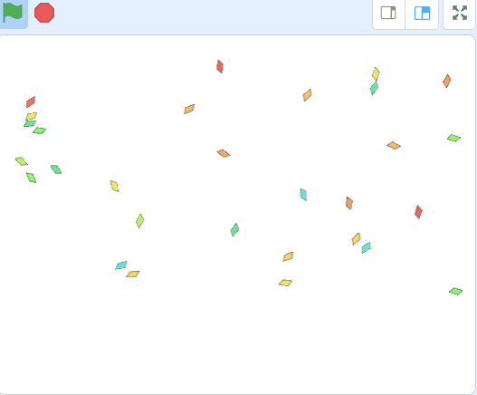
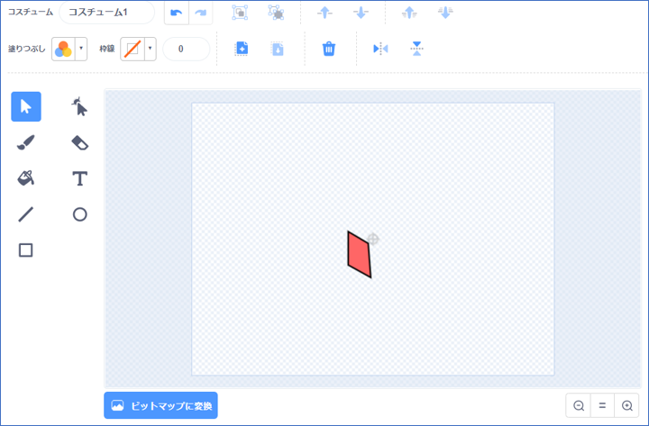
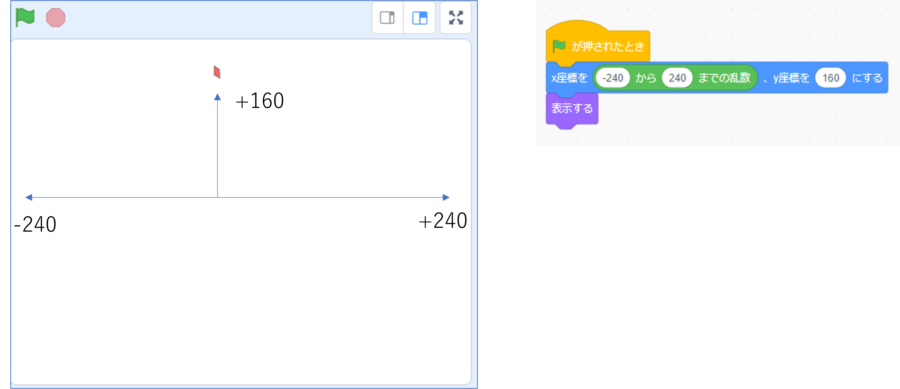
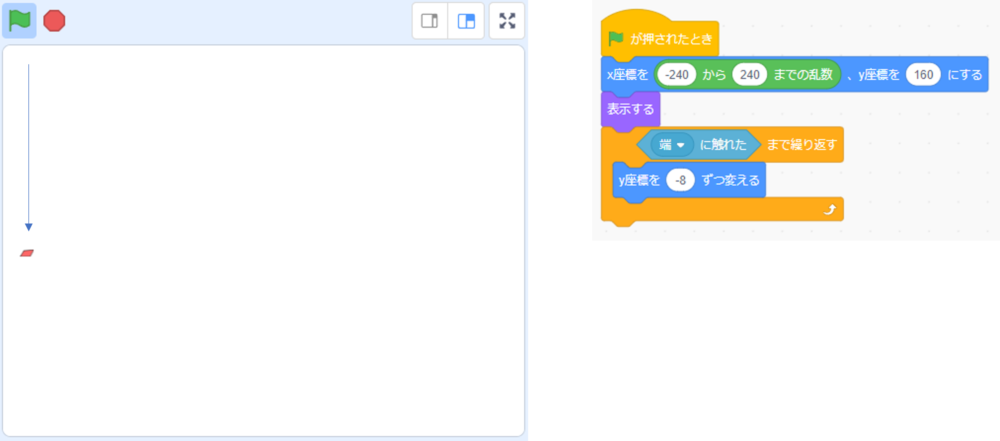
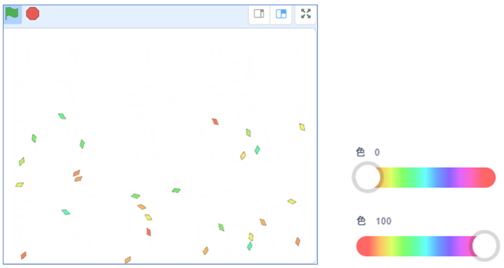
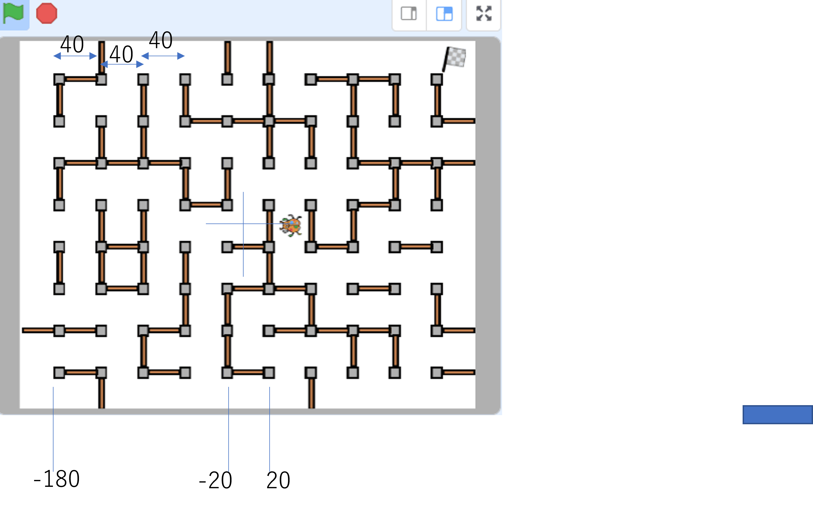
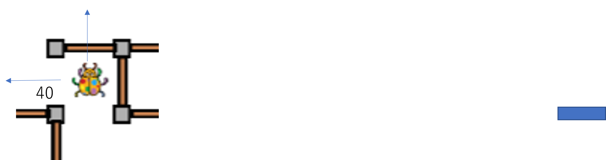
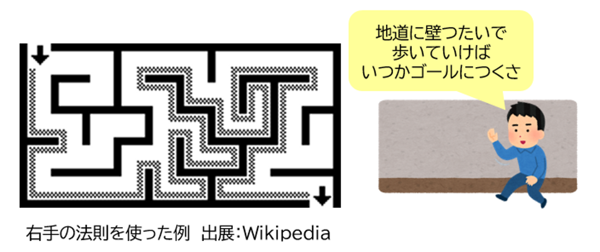
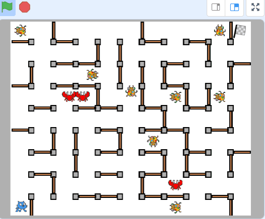
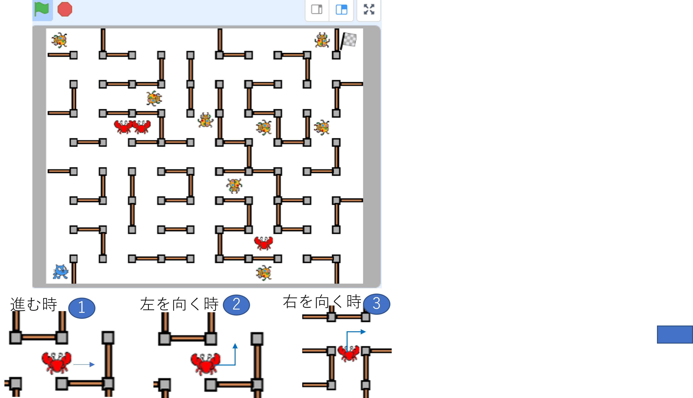

「自動で迷路描画」の続編、「迷路で逃走中」でパワーアップしましょう！

新しいスプライトを描いて作ります。
わざと中心からズラす。後で不規則性が賑やかな雰囲気になる。

Ｘ座標はランダムに、Ｙ座標はこの辺（+160）

上から下に落ちていく


前回と同じ座標(X:-180, Y140)から迷路を描画していたら、真ん中がちょうど(X:0, Y0)のはずです。
１．バグの最初の位置はX0, Y0にする
２．ずっと彷徨います
さて、どうする・・・？

ヒント
ヒント１．どちらを向くか？
ヒント２．空いていれば、１マスの距離は40
ヒント３．壁があろうがなかろうが進む
ヒント４．壁があるなら進んだ分、戻ればいい
ヒント５．千里の道も一歩から


１．まずは１匹で作る。座標はX0, Y0
２．回転方法を[回転しない]にする
３．ずっと
□□□□□
４．もし＜ ＞たら
□□□□□
□□□□□
５．でなければ（壁に触れていなければ）
□□□□□
□□□□□
６．ずっとに戻る

１．まずは１匹で作る。座標はX0, Y0
２．回転方法を[回転しない]にする
３．ずっと
【法則①】
４．もし＜ ＞たら
【法則②】
□□□□□
５．でなければ（壁に触れていなければ）
□□□□□
【法則③】
６．ずっとに戻る

１．まずは１匹で作る。座標はX0, Y0
２．回転方法を[回転しない]にする
３．ずっと
【法則①：進む】
４．もし＜ ＞たら
【法則②：戻る】
【法則②：前に進めないから左を向く】
５．でなければ（壁に触れていなければ）
【法則③：進めたのでそのまま何もしない】
【法則③：もし右が空いていたら右を向く】
６．ずっとに戻る
１．まずは１匹で作る。座標はX0, Y0
２．回転方法を[回転しない]にする
３．ずっと
【［適当］歩動かす】
４．もし＜ 壁に触れ ＞たら
【移動した分、戻る】
【左を向く（前が壁の時）】
５．でなければ（壁に触れていなければ）
【何もしない（前が空いていた。その場にいる）】
【右を向く（右に壁が無いなら右に行く）】
６．ずっとに戻る
７．完成したら複数クローンする
CoderDojo青梅 みんなの投稿（Voting-App）